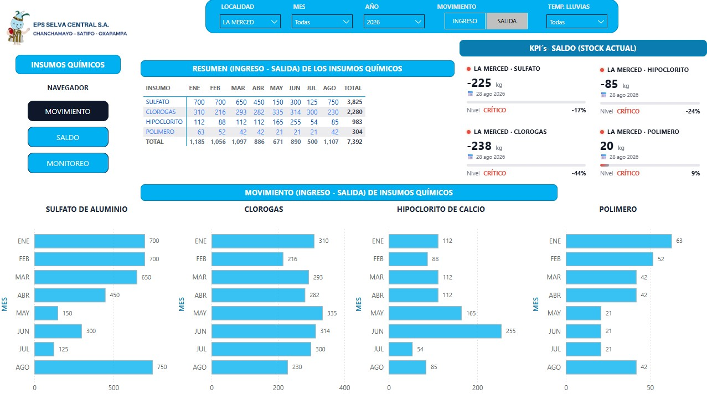
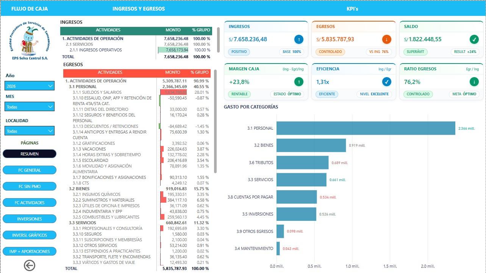
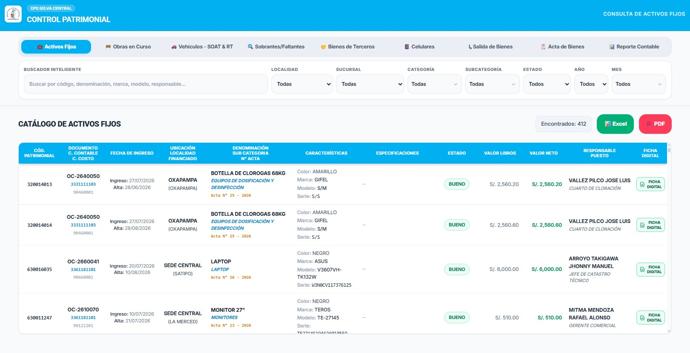

JUAN E. BOHORQUEZ AGUILAR
Business Intelligence Analyst
Casos de éxito y soluciones de Business Intelligence desarrolladas

Solución integral de Business Intelligence para el control de inventarios y monitoreo de mermas y movimientos mensuales de insumos químicos críticos. Con un backend estructurado en bases de datos SQL y procesos ETL 100% automatizados en Power Query, se eliminó el procesamiento manual y se estructuró un análisis de procesos óptimo en Power BI.
Ver Reporte Power BI
Dashboard financiero interactivo enfocado en el análisis dinámico de flujos de caja y proyección de liquidez empresarial. Alimentado directamente desde bases de datos SQL y optimizado mediante la automatización de consultas en Power Query, procesa y visualiza indicadores financieros clave en Power BI para una toma de decisiones estratégica.
Ver Reporte Power BI
Aplicativo web desarrollado desde cero con HTML, CSS y JavaScript para la gestión integral del ciclo de vida de activos fijos: registro de altas, bajas, depreciación y revaluación bajo NIC 16. Desplegado en GitHub Pages como solución accesible y sin dependencias de licencias propietarias.
Ver Aplicación Web